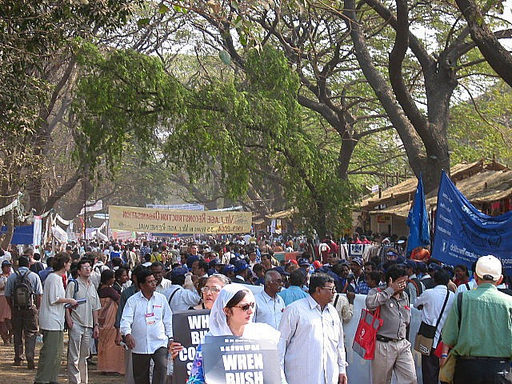
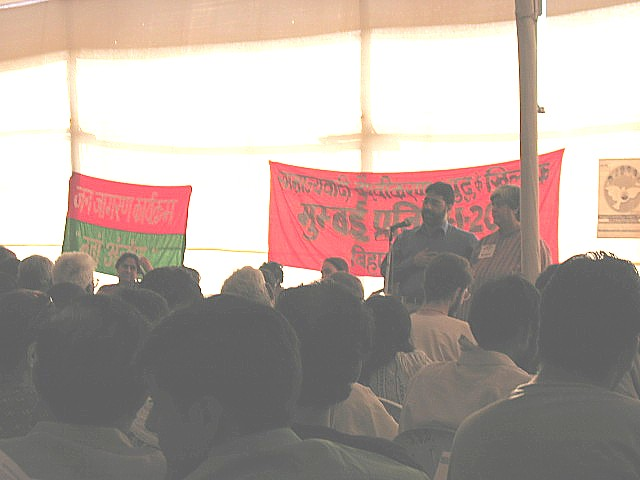
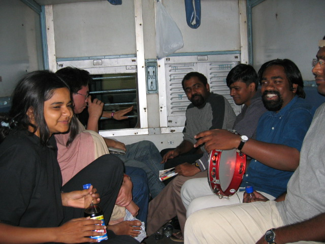

Interventions · February 2004
Global Capitalist Intensification and Global Resistances/Visions: World Social Forum 2004, Mumbai
It is difficult to sum up and reduce the plurality of organizations, struggles and programs; panels, meetings, and forums; demonstrations, banners, pamphlets and slogans; shops, stalls, music and dance performances, art installations and film screenings; and, of course, individuals, peoples and cultures present at the 4th World Social Forum (WSF) held in Bombay from January 16th to January 21st. But I can perhaps highlight certain tensions at the forum, as well as what for me are key questions for the global resistances against “neo-liberalism” or “globalization” and imperialism, which the WSF has always served as a meeting ground for. The current US occupation of Iraq, as well as “globalization” - that is to say, the current onslaught by the US-led WTO, IMF and World Bank, multi-national corporate leaders, national governments, politicians and business interests to transform every human activity and natural resource into a measured and owned commodity for profit (in sum, the intensification of global capitalism) – were central themes. In fact, unlike previous World Social Forums, many emphasized the link between US imperialism and capitalist globalization, as well as the need to focus our struggles against and form alternatives to such imperialist globalization. However, the question of how to create “another world” different from market-driven capitalism and naked imperialism, as well as what that world might be, served as a dividing point at WSF (and at Mumbai Resistance). This division can broadly be described as one between social democrats, parliamentarians and large NGOs, who in the end seek to “humanize” or reform the “excesses” of global capitalism by working with corporations, governments and international trade organizations, and the social movements that refuse to compromise with revisionist institutions and are actively engaging in struggles to build alternatives controlled by people and in tune with local needs, rather than the needs of profit and the market.
This division clearly came out at one of the larger forums I attended at the WSF, entitled “Globalization, Economic and Social Security,” at which Joseph Stiglitz (former World Bank Senior Vice-President and Chief Economist) and Trevor Ngwane (Anti-Privatization Forum, South Africa) spoke, among others (including Laura Tavares, Samir Amin, and Prabhat Patnaik). Stiglitz presented his technocratic approach to capitalist development, one that does not push for immediate liberalization of capital markets, privatization of social security, and dismantling of labor legislation, for example, which he said “failed to produce economic growth, and increased economic and social insecurity in the developing world,” but rather, liberalizes and privatizes the economy through a state control that takes employment, poverty and living standards into account. In his excellent speech criticizing Stiglitz and capitalist reformism, Ngwane reminded everyone “it is only the struggle of the exploited and oppressed that gives us economic security and can overthrow capitalist society.” Rather than using vague terms like “globalization,” “civil society” and “human rights,” and rather than merely celebrating the diversity of struggles and “spaces,” Ngwane emphasized grassroots struggle and planning, and said that the chief obstacle to “another world” was capitalism itself. Through their program to commodify all aspects of life, the capitalist class – the owners and managers of trans-national corporations, political leaders, civil servants of the World Bank, WTO and IMF, and national governments - are trying to crush the struggles of those who are seeking a world where housing, education, food and healthcare are available to all, not just the rich. He talked about the struggle against apartheid, which he said was not just a struggle against racial domination but one about people taking back control over their own land, resources, and labor from the domination of the capitalist classes as well, who employed race as a means of wealth accumulation. The victory over apartheid was betrayed by Nelson Mandela, he said, who caved into the neo-liberal capitalist agenda, bringing job losses, privatization of electricity and water, displacement from land, death and spread of HIV/AIDS instead – in short, “capitalist apartheid.” Rather than making deals with capitalism, which is about making profits, Ngwane highlighted the methods of new social movements that have no respect for the “old leaders” – for example, instead of asking for electricity, “we reconnect our own electricity.” (He was referring to the activities of the Soweto Electricity Crisis Committee, which trains people on how to reconnect their electricity after being shut off and also shuts down the electricity of local political leaders in protest – see the July 2003 issue of New Left Review for an excellent interview with Ngwane). In perhaps the most memorable moment of his talk, Ngwane said in front of Stiglitz, “we must work with the Stiglitzs’ of the world but there is no solution through them, no solution under capitalism,” which drew applause from many in the crowd.

Photo 1. Typical crowd scene at WSF
This tension between “reformists” and “grassroots movements” played out in various arenas in the WSF, and served as the basis for an alternative forum across the street called the Mumbai Resistance (MR). Calling the WSF a “supermarket for non-governmental organizations” and a “safety-valve” for global discontent, 311 primarily Marxist-oriented organizations held a three-day parallel event. Seeing the necessity to focus and strengthen the anti-globalization and anti-imperialist movement throughout the world, and clearly and unambiguously linking the US war on the world, state terror and suppression of dissent and minorities, and the capitalist onslaught on the lives of peasants, working class, tribals, women, youth and minorities, a series of twelve seminars were held in four open-air tents on these various aspects of imperialist globalization, culminating in a final rally. After attending several seminars at the WSF that merely sloganeered against “globalization” or used vague language of “human rights,” “development,” and “democracy,” the few seminars I attended at MR were indeed refreshing. For example, at the panel entitled “Attack on Democratic Rights in the So-called ‘War on Terrorism,” S.A.R Geelani vividly described his experience of being detained, beaten, convicted in the press as a “terrorist,” and given the death penalty under the Prevention of Terrorism Act (POTA) based on inadmissible and flimsy evidence in the aftermath of the Indian Parliament attack on December 13, 2001 (after a massive legal and popular campaign, he was acquitted two years later). By highlighting the worldwide use of anti-terrorism laws especially after September 11th to detain people based on ethnicity, religion, and mere suspicion, to monitor conversations, meetings and records, and to stir up a militarist nationalism and thereby shut down any form of dissent, Geelani and others on the panel clearly showed the link between the increasing attacks on civil liberties and minorities occurring around the world, and wars of aggression. At the end of his talk, Geelani explicitly linked the struggle for Kashmiri self-determination with the struggle against attacks on Indian democracy by the Indian government and Hindutva forces, thus bringing out the need to focus our energies against this increasing repression linked to so-called “wars on terrorism.” The general feeling at MR was that US imperialist globalization can only be pushed back through a more focused, concerted campaign by the multitude of peoples’ movements around the world, not through localized, single-issue movements nor bureaucratic NGOs nor vague slogans like “Another World is Possible.” In fact, one clear difference with WSF was the active presence of representatives from armed peoples liberation struggles around the world, from Nepal to the Philippines. When imperialism is becoming increasingly aggressive, when governments are turning more and more to brute force to crush popular movements, and when some armed popular struggles are clearly showing success (such as in Nepal), why does the WSF explicitly rule out armed struggle? The WSF’s lack of focus on US imperialist globalization, and the prevalence of NGOs and their vague language of “rights” and “development” rather than the importance of strengthening people’s organization and struggle were the principal critiques lodged by MR.

Photo 2. S.A.R Geelani speaking at Mumbai Resistance. Geelani highlighted the increasing state repression within India carried out under the guise of the “war on terrorism.”
Yet rather than being an organization that establishes a coherent, all-embracing program and strategy, the WSF states that it is “an open meeting place for reflective thinking, democratic debate of ideas, formulation of proposals, free exchange of experiences and inter-linking for effective action, by groups and movements of civil society that are opposed to neo- liberalism and to domination of the world by capital and any form of imperialism, and are committed to building a society centred on the human person” (WSF Charter of Principles). And while some may call this affirmation of a plurality of struggles as unfocused, divisive and diversionary, I could not help but think that this de-centralized gathering of people who are mobilizing around issues ranging from genetically-modified crops and their effect on third-world agriculture to violence against sex workers and hijras to privatization of water and electricity was indeed the very strength of the anti-globalization movement. I had the feeling that the logic of capital, which seeks to commodify all aspects of life, and employs various institutions such as patriarchy, race, caste privilege and sexual discrimination, was under attack from many different angles and directions. Why centralize all these dynamic energies fighting for control over land, dignity, work and health beneath unified strategies and principles? While I felt that big NGO, revisionary discourse occupied a large space at the WSF, which indeed diverts struggles from organizing around eliminating the root of “globalization” itself – capitalism – the gathering of both revisionary organizations and more grass-roots organizations into one space was a positive thing. Why should people artificially isolate themselves from institutions that are increasingly present in people’s lives and politics? Why totally abandon the language and institutions of “human rights,” “civil society,” “democracy” and “development,” when many people are politically engaged through this language (or do not even have this much)? Why not push and engage the Stiglitzs’ and big NGOs of the world while remaining adamant and uncompromising about grassroots organization and total control over our lives and production?
The expansion of the scope of the WSF from trade and economic issues to include women’s issues, dalit and tribal rights, sexuality issues and imperialist war, was a positive element as well. Some thought, however, that this constantly increasing scope contributed to WSF’s lack of focus on what “the people” should unite and fight against, which is US imperialism and its neo-liberal capitalist agenda around the world. Yet if capitalism seeks to reduce every aspect of our life to a measured and owned commodity, why not challenge this logic on the basis of the multiple ways in which we are affected by it, which might also be through racism, sexism or casteism? Structures of racial discrimination, patriarchy, and caste oppression, while not completely having their origins within the logic of capitalism, are related and affected by it.
Many might disagree with my emphasis on capitalism as the primary axis of oppression. After all, patriarchy is a system in which men benefit from the subjugation of women; caste is an institution where upper castes benefit from the subordination of lower ones. Both operate under different logics than capitalism and the class relation of capitalist and worker. But by themselves, sexism and racism are not the main organizing principles of worldwide production and distribution. Capitalism, however, is, and subordinates society into a system where issues of race and sex revolve around the logic of profit. To give an example from a WSF talk at the panel, “Globalisation and Social Exclusion: A Dialogue between Academicians and Activists,” Bina Agarawal discussed gender exclusions in terms of land ownership. She showed how capitalist globalization relies on and even exacerbates gender inequality. Rural displacement caused by the flood of subsidized staple crops from the North and the rise of cash-crop agriculture in the South has forced men to work in the cities, leaving women with most of the farming, in addition to housework and childcare. The land, however, usually remains in the man’s name and is passed to the son, often leaving women vulnerable in the event of abandonment or husband’s death. She also gave the example of the current trend in India towards “de-centralized” tribal management of forests, which fences off lands from women, making them travel farther to gather firewood or forcing them to use weeds and crop dust instead, causing severe health problems. Thus, the displacement of men from the countryside to factories/informal sector in the city and the fencing off of forests in the name of “de-centralized management” relies on and even worsens the sexual division of labor and lives of women since they are forced to do even more unpaid, dangerous work while assets and wealth remain in the hands of men. Agarawal’s presentation was an excellent example of showing how global capitalism is employing and worsening sexual inequality in the favor of capital and profit.
The focus I am arguing for and found somewhat lacking at the WSF was this focus on a newly intensified global capitalism as the main organizing force that takes away control over people’s houses, families, lands, and labor, and exacerbates sexual, racial and cultural oppression. MR, on the other hand, while bringing out this focus on capitalism and the necessity for grassroots organization, was too narrow in its focus and indeed often simply derisive of the energies of various organizations engaged in concrete local struggles present at the WSF. Is there not a way to maintain and strengthen the powerful diversity of struggle present at WSF and MR while at the same time focusing their energies on capitalism and imperialism? At the WSF Opening Plenary Session, the author/activist Arundhati Roy called on us to “turn our gaze on Iraq” as the “inevitable culmination” of imperialism and the project of neo-liberalism. As a focal point for global resistance, the invasion and occupation of Iraq has continued to serve as a unifying point for a multiplicity of struggles around the world. How can we forget the millions that were out on the streets on February 15, 2003 in cities all around the world, and the continuing pressure still being put on governments over the sending of troops, the lies presented as reasons to go to war, the tremendous human cost of the war, and the refusal to give back sovereignty to the Iraqi people? At MR and WSF, Roy called for everyone to jointly adapt a proposal that concretely linked Iraq and the US capitalist agenda, which any group, no matter what their focus, could contribute to. Pick out two corporations that are profiting from the destruction of Iraq, she said. List every project they are involved in and locate their offices in every city and country across the world. Go after them and shut them down. I interpreted this to mean doing things like holding massive rallies at these companies’ offices rather than just at Trafalgar Square in London or the Lawn in Washington DC. Or shutting down their electricity/water, blocking their flow of goods and services, bombarding them with phone calls, e-mails and faxes, or even occupying them. Maybe do the same to anyone who does business with them. Or launch massive publicity and media campaigns. The ideas are endless. In short, instead of just focusing on the state, why not focus the immense creative energies of the diverse movements on capital, which is the principal driving force behind the invasion of Iraq? (In addition to awarding large reconstruction contracts to US companies, the US government has already created laws in Iraq allowing for 100% foreign ownership of any public or private enterprise/service, zero controls on capital flight, flat income tax, etc.). As Roy succinctly put it, “The issue is not about supporting the resistance against the occupation…We have to become the global resistance against the occupation.”
Aside from my question of focusing more on capitalist commodification of our lives, and linking this to the immense number of struggles on the ground, another question revolved around how to organize and engage people politically on an everyday level. While everyone might be affected by capitalism and “globalization” in some way, these words are still quite abstract and need to be articulated and linked to everyday life, feeling and locality. What are some effective ways of doing so? Here is where some aspects of the cultural/media programs, exhibits and panels at the WSF were suggestive. After being bombarded with the same repetitive slogans, banners and endless “tribal” drumming and dancing day after day, “Prima Donna” - the name of the song-dance performance by a group of transsexual and homosexual performance artists, people living with HIV\AIDS, and sex workers from Malaysia who call themselves Sexy Divas – was one of the highlights of WSF. Refusing the status of victim and the marginalization that accompanies it, they let loose a barrage of wonderfully modified, glamourized pop-rock tunes from Tina Turner to Britney Spears and dazzled the audience with their colourful costumes, ranging from sparkling lounge gowns to white leotards to bright peacock plume feather dresses. In between dance-moves they put forth their message of gender and sexual freedom, protection of sex-workers, and stigmatisation of HIV/AIDS. At one point in the show, they were rushed by the crowd and showered with flowers and kisses. On the whole, an excellent indicator of how cultural performance can begin to mobilize at the level of feeling, style and fun – away from the tired old methods of lecturing, sloganeering, leafletting and demonstrating. What if this show and message were to be put on in places such as the surrounding slums of Bombay?
Photo 33. “Prima Donna” song-dance performance by the Sexy Divas from Malaysia
WSF included screenings of many documentaries and short films in two movie halls. Film/documentary makers from all over the world showed and discussed their works, which covered everything from the Gujarat genocide to the traffic of women for the sex trade in Kosovo to Columbian resistance hip-hop. However, in terms of how to relate to people effectively on an everyday level through cultural practices, one of the most suggestive films I saw was Unlimited Girls by Paromita Vora. Narrated through an unseen character called Fearless and centered around her conversations in an internet feminist chatroom with characters such as Devi_is_a_Deva, Attila_the_Nun, and Marxist Usha, Unlimited Girls takes one on a wonderfully confusing journey through the immense variety and rich history of feminism in India, as well as the tensions within it. It shows the ongoing process of someone defining for herself what it is to be feminist today through her encounters with all sorts of characters, besides those in the chatroom. We meet a class of college women watching a video on sex, a cop who makes “women’s upliftment films” that will teach women not to break men’s hearts and drive them to suicide or violence, older feminist leaders discussing the histories, events and background of feminism in India, and college boys talking about “flirty” women. Through the lively chatroom conversations, encounters and interviews on everything from dowry killings, men burning their lovers, domestic violence, sexual harassment, relationships, love, and sex, we are shown the vibrant “unlimitedness” of feminism actively being defined in front of our eyes. The film gets away from identity politics (we never see the characters of the chatroom, just the computer screen…a made-up TV commercial in the film comically advertises “feminist detectors”) and shows that rather than being a unified set of principles, feminism is the everyday conversations, arguments, struggles and encounters of the different people that shape it. As a way of introducing a younger generation to feminist issues and histories, it was a wonderfully refreshing film that did not seek to shove some agenda down our throats or just simply document sexism and patriarchy. Rather, through its form and content, it posed questions and sought to stimulate dialogue and conversation so that people will actively form their own feminisms.
There is so much more I want to talk about – the impressive, organized, passionate presence of Korean organizations, a fantastic Sarai panel on the necessity to engage with the “gray sector” of the media economy (the world of pirate VCDs, DVDs, music, software, recycled hardware, video clubs, internet cafes, etc.) that play an important role in peoples’ everyday lives, Orissa Development Action Forum and their project to build a small, water power electric generator that uses local geographical knowledge, employs local adivasis and is linked to other development projects such as women’s training programs and after-school centers. But since I am really trying hard not to write a “long list showing how diverse and plural WSF was”-type of article, I will just end with one thing emphasized to me here: the importance of global activist communities and networks and the necessity to constantly build and maintain these through dialogue, continuing contact, organizing periodic events and joint projects and just getting together informally. The most stimulating part of the WSF experience for me was just travelling with the members of the Alternative Law Forum (ALF) in Bangalore. The conversations and arguments during and after WSF on everything from “what politicised us” to our ideas of what “another world is possible” means to how sexy Prima Donna was or how overwhelming and tiring shuffling through WSF was at times was the highlight for me. Sharing information on the massive series of neo-liberal reforms in rural administration, law, education and health care in Japan, as well as the new Japanese militarism; learning about ALF’s work with hijras and sex workers, legal rights training programs, and research on the effect of WTO and state intellectual property laws on the “gray media market” was incredibly stimulating. In my mind, it was part of a process of building a network or community not in any “united we stand” sense or “principles and charters” sense but more in terms of a looser international network of friends that exchange information, resources, contacts, and experience, which we can utilize in each of our local efforts to fight state repression, organize unions, write articles, teach or whatever. Tokyo, Bangalore, New York, Colombo – we are located in different sites and engaged in different struggles yet are there to help each other out when necessary.

Photo 4. Alternative Law Forum and friends on the way to Bombay…
In short, two messages were driven home to me through this WSF experience. The necessity to constantly organize, connect, and create these international “communities,” especially when capitalism is making its assault on a global level as well. And most importantly, the necessity to organize, connect and identify with people at a local, person to person, grassroots level, and to do so with some more focus and vision – the focus of capitalist commodification of all our lives and resources, and visions of other non-capitalist worlds.